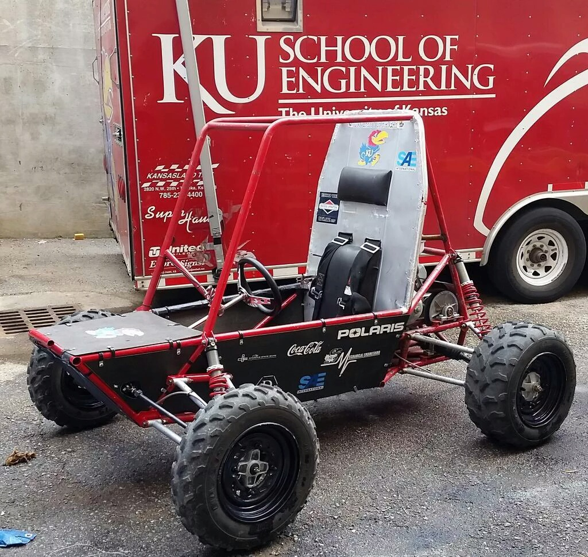

Team Captian: Zach Jones
This year we built car number 091. We competed at Tennessee Tech University and placed 42 overall. We met our primary goals of bringing a car to competition, and grew a lot as a team.
Team Captain: Nick Davis
Unfortunately, we were unable to bring our car to competition due to unresolved mechanical issues. Despite
these set backs we grew as a team gaining important knowledge that we hope to use in future cars.
Team Captians: Austin Merritt and Ian Thompson
|  | This was the first year of the return of the baja at KU. This car compted at the SAE sanctioned event at UTEP placing 48th overall. Ultimately all of the first year goals of the team were achieved
|